Ninety-nine years, one town.
The Kimberley Pipe Band started in 1927, when Kimberley was a mining town built around the Sullivan Mine. The mine closed in 2001. The band kept marching.
Most of what you see here comes from the band’s own albums, scanned and captioned by members ahead of the 100th. If you can put a name to a face, or have photos of your own, we’d love to hear from you at info@kimberleypipeband.ca.
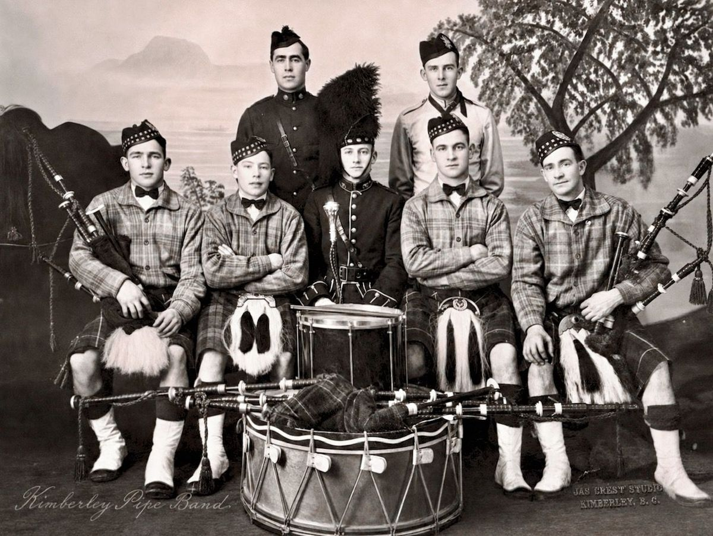
The Pipe Majors
Nine people have led the band. Angus Scott did it twice. David Ekskog held the job for 36 years.
- Angus Scott1927–1937, 1938–1939
- Alex Oliphant1937–1938
- Alan Graham1939–1943
- Nessie Oliphant1943–1945
- Hamish Scott1946–1968
- Gordon Stewart1968–1972
- Jim Warriner1972–1978
- David Ekskog1978–2014
- Jock MacDonald2014 to today
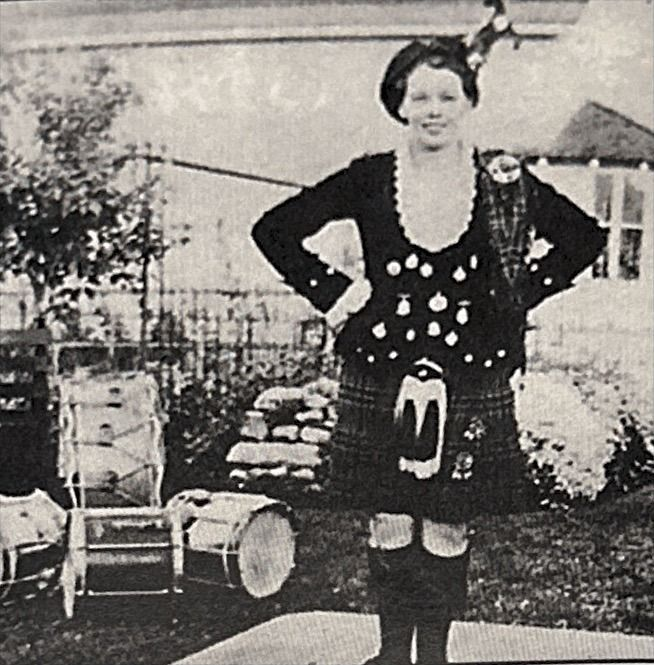
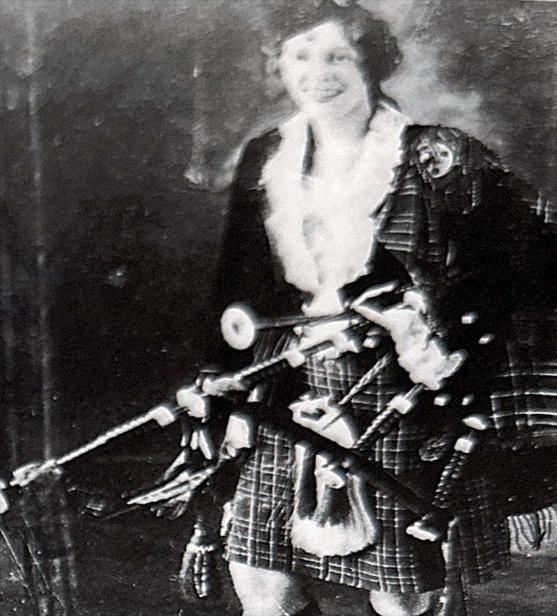
Nessie Oliphant, Pipe Major 1943–1945
In 1937 a photo in the band’s album is captioned simply “Miss Nessie.” Six years later she was leading the band.
Nessie Oliphant was Pipe Major from 1943 to 1945, through the last years of the Second World War, before handing the band to Hamish Scott. She followed Alex Oliphant, who led the band in 1937 and 1938.
The trail so far
From the townsite in the thirties to Vimy Ridge in 2025.
The first band
The original Kimberley Pipe Band played on Kimberley Day, July 1, 1927, with Angus Scott as Pipe Major.
Townsites and mine camps
Through the thirties the band played the McDougall townsite and the massed bands at Chapman Camp, and turned out for Robbie Burns night in 1934.
Playing through the war
Alan Graham led the band from 1939 to 1943, then Nessie Oliphant until 1945.
The Hamish Scott years
Hamish Scott was Pipe Major for 22 years. The band crossed the border for the Scottish Picnic in Coeur d’Alene, Idaho, playing alongside the Angus Scott Pipe Band from Spokane.
Expo, a dam and a prime minister
Gordon Stewart and then Jim Warriner led the band through a busy decade: Expo ’74 in Spokane, the Libby Dam in Montana, and a handshake with Prime Minister Pierre Trudeau. In 1977 a committee led by Jim Warriner and Dave Ekskog organized the band’s 50th anniversary.
Thirty-six years with Dave Ekskog
David Ekskog took over in 1978 and stayed Pipe Major until 2014, longer than anyone before him. His service was recognized with a Jubilee Medal.
Piping out the Sullivan
The Sullivan Mine closed in December 2001 after 92 years and more than 163 million tons of ore. The band stood in the snow at the mine to play it out.
Spring Flings and summer parades
Massed bands at the Nelson Spring Fling in 2007 and Revelstoke in 2013, and every parade from Creston to Cranbrook in between.
The Royal Nova Scotia International Tattoo
In 2010 the band travelled across the country to play the Royal Nova Scotia International Tattoo in Halifax, and found time for Peggy’s Cove.
A new Pipe Major, and 90 years
Jock MacDonald, a member since 1996, became Pipe Major in 2014. Three years later the band marked its 90th anniversary with a Tattoo, a parade through town and a ceilidh.
Eighty years of Liberation
In May 2025 the band travelled to the Netherlands for the 80th anniversary of the Liberation. The trip was first planned for the 75th in 2020 and held back by COVID. The band played with massed bands, stood with veterans, visited Canadian war graves, and crossed into France to play at the Vimy memorial.
One hundred years
The 100th Anniversary Tattoo, July 23–24, 2027, in Kimberley.
Visit the Tattoo site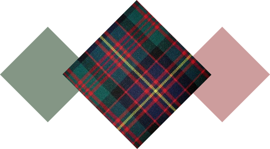
Our tartan: Cameron of Erracht
A blend of the MacDonald and Cameron tartans, devised by Marsali MacLean, mother of Sir Allan Cameron of Erracht. In 1793 he raised the 79th Highlanders, which became the Queen’s Own Cameron Highlanders.
Meet the band
Tap anyone to read their Member Monday answers: first gig, first tune, and the tune they’d rather never play again.
Leading the band
Pipers
Drummers
Those who came before
Some of the pipers and drummers who wore the tartan before us. Know a face that’s missing? Let us know.
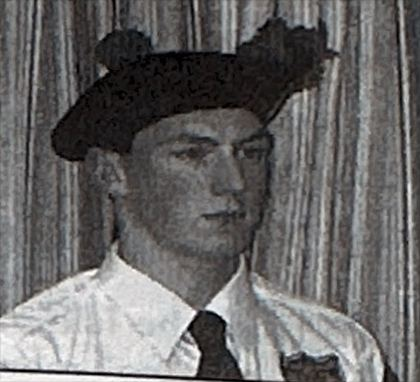
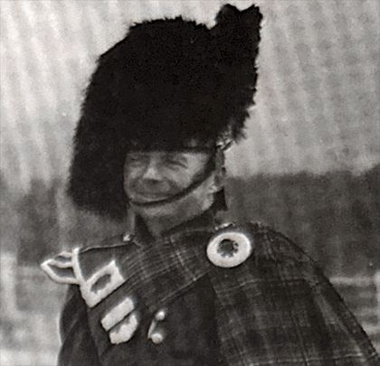
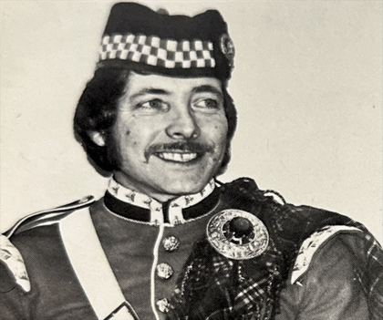
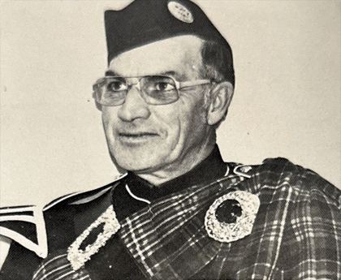
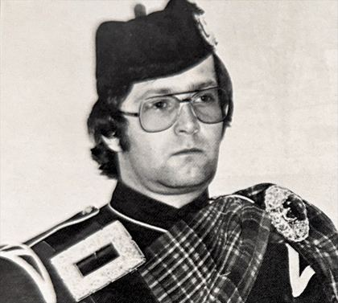
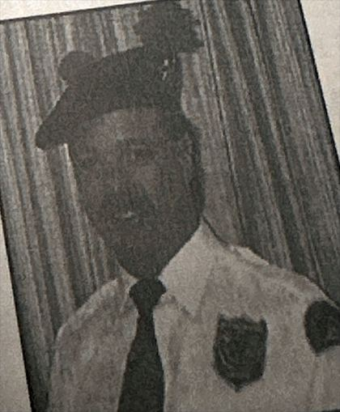
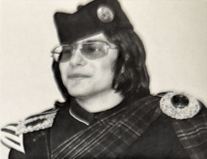
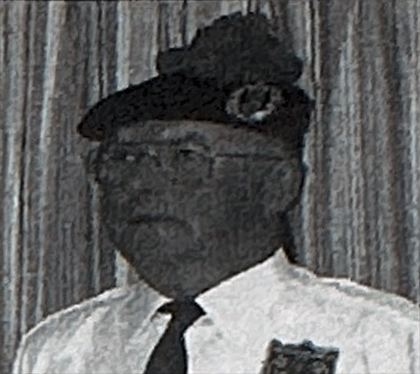
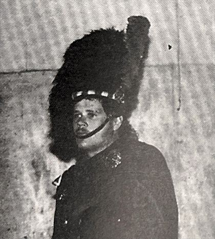
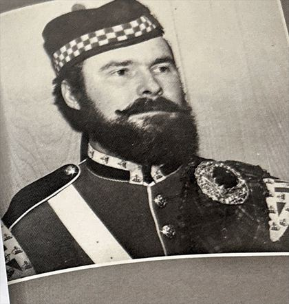
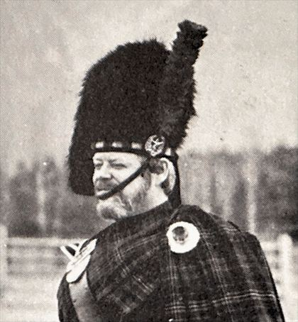
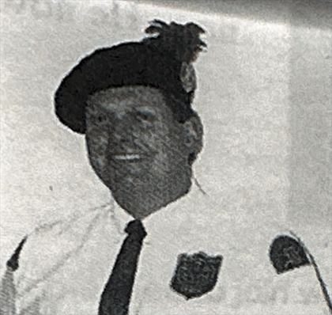